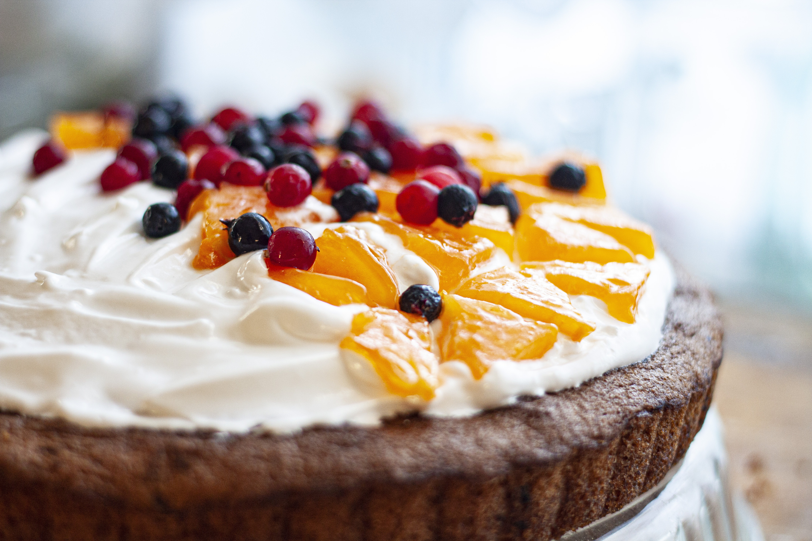

Crónicas de la dulzura
Por Misture
En Misture, cada postre tiene una historia, y cada historia se cuece a fuego lento.
Este blog es un espacio para explorar los secretos detrás de nuestras creaciones:
los ingredientes que elegimos, los rituales que nos inspiran, y las emociones que se
despiertan al primer bocado.
Aquí la niebla no oculta, sino revela. Y la dulzura no adorna, sino transforma.
Cada entrada es una invitación a detenerse, a mirar con otros ojos lo cotidiano,
y a descubrir que detrás de una mousse, una espiga o una ralladura de limón,
hay memorias, intuiciones y silencios que se funden en cada capa.
Misture no es solo sabor: es atmósfera, es gesto, es el arte de decir sin palabras.
Bienvenido a este rincón donde la repostería se convierte en crónica,
y el paladar se vuelve brújula para explorar lo invisible.
Más allá de las recetas, compartimos consejos prácticos para seleccionar ingredientes
frescos,
técnicas de repostería y variaciones para adaptar cada creación a tu gusto.
Encontrarás guías paso a paso, combinaciones de sabores y alternativas sin gluten o sin
azúcar cuando sea posible.
También publicamos historias del equipo, entrevistas con proveedores locales y
temporadas especiales
donde exploramos frutas, especias y tradiciones que inspiran nuestras mesas.
Cada publicación busca conectar el arte culinario con lo emocional, lo simbólico y lo
cotidiano.
En Misture, creemos que compartir un postre es compartir un fragmento de historia.
Por eso, este blog también recoge relatos de nuestros clientes, momentos que nacen entre
cucharas y confidencias,
y reflexiones sobre el acto de crear, servir y saborear.
Suscríbete para no perderte nuevas crónicas, recetas que despiertan los sentidos
y reflexiones que transforman lo dulce en experiencia.